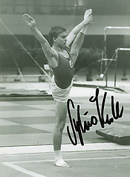

Sylvio Kroll (GDR/GER)
1985 World AA Bronze Medalist and PB
Champion
1988 Olympic V Silver Medalist

Medal Total
- Olympic Games: 2 Silver
- World Championships: 2
Gold, 1 Silver, 4 Bronze
- World Cup: 1 Gold, 1
Silver, 1 Bronze
- European Championships: 1
Gold, 4 Silver
Competition Results
- 1982
- GDR Championships: 1st V
- Jr. European Championships: 9th AA, 3rd V, 4th HB, 7th
FX
- Jr. GDR-CSSR Dual Meet: 6th AA
- Tournament of Tomorrow: 5th AA
-
- 1983
- Chunichi Cup: 7th AA, 2nd V
- FRA-GDR Dual Meet: 1st Team, 1st AA
- GDR Championships: 2nd AA
- GDR-NOR Dual Meet: 1st Team, 2nd AA
- Jr. Friendship Tournament (Druzhba): 2nd
Team, 4th AA, 1st R, 2nd V, 3rd PH, 4th PB, 5th HB
Jr. GDR-USSR Dual Meet: 2nd Team, 1st AA, 1st R, 1st V, 2nd PH
- World Championships: 5th Team, 15th AA, 4th V, 5th PH,
7th FX
-
- 1984
- Chunichi Cup: 2nd AA, 1st V, 2nd FX, 2nd PH, 4th PB,
5th HB
- CSSR Spartakiade (Olomouc): 2nd Team, 10th AA, 1st V,
3rd FX
- GDR City Meet: 2nd AA
- GDR Championships: 3rd AA, 1st V, 1st HB, 2nd PB
- GDR-SUI Dual Meet: 1st Team, 2nd AA
- GDR-USSR Dual Meet: 2nd Team, 1st AA
- Tokyo Cup: 1st PH, 3rd V, 8th FX
-
- 1985
- Cottbus International: 4th AA, 1st FX, 3rd R
- DTB Cup: 1st AA, 1st V, 2nd R, 2nd PB, 3rd HB
- European Championships: 4th AA, 1st V, 2nd PH,
2nd PB, 5th HB
- Gander Memorial: 4th AA
- GDR Championships: 3rd AA
- GDR-SUI Dual Meet: 1st Team, 1st AA
- Moscow News: 6th AA, 3rd V, 3rd PB, 4th HB, 5th PH
- World Championships: 3rd Team, 3rd AA, 1st PB,
2nd HB, 4th FX, 6th PH, 7th V, 8th R
-
- 1986
- Belgian Gym Masters: 7th AA
- FRA-GDR Dual Meet: 1st Team, 1st AA
- Goodwill Games: 2nd Team, 4th AA, 3rd V, 5th HB, 7th
PH
- World Cup: 4th AA, 1st V, 2nd HB, 3rd FX,
5th PB, 8th PH
-
- 1987
- American Cup: 8th AA
- Cottbus International: 1st AA, 1st V, 1st PB, 1st HB
- DTB Cup: 2nd AA, 1st V, 1st PH, 1st HB, 3rd FX, 4th R
- DTV Cup: 3rd AA
- European Championships: 4th AA, 2nd V, 2nd HB,
4th R, 7th FX, 8th PH
- Gander Memorial: 1st AA
- GDR Championships: 2nd AA, 4th R
- GDR-SUI Dual Meet: 1st Team, 1st AA
- ITA-GDR Dual Meet: 1st Team, 2nd AA
- World Championships: 3rd Team, 4th
AA, 1st V, 4th PB, 4th PH, 6th FX
-
- 1988
- DTB Cup: 5th AA, 1st V, 2nd HB, 3rd R, 4th PB, 6th FX
- GDR Championships: 1st AA, 1st FX, 1st
PH, 1st V
- Olympic Games: 2nd Team, 19th AA, 2nd
V, 7th PB, 8th PH
-
- 1989
- Cottbus International: 1st AA
- GDR Championships: 2nd AA
GDR Cup: 3rd AA
- GDR-SUI Dual Meet: 1st Team, 1st AA
- World Championships: 2nd Team, 10th
AA, 2nd V, 7th FX
- World Sports Fair: 7th AA
-
- 1990
- Blume Memorial: 4th AA
- GER-ITA-ROM Meet: 1st Team, 6th AA
- Goodwill Games: 4th Team, 6th AA, 2nd V, 6th FX
- Olympic Cup: 2nd AA
USA-GDR: 2nd AA
-
- 1991
- Chunichi Cup: 8th AA, 5th PH, 5th R, 5th HB
- Cottbus International: 1st AA, 1st PB, 2nd V, 4th FX,
4th PB
- GER Championships: 2nd AA
- GER-GBR-NOR-SWE Meet: 1st Team, 1st AA
- HUN Intl. Championships: 14th AA, 1st V, 4th HB
- Tokyo Cup: 2nd R, 6th PH, 6th V
- World Championships: 3rd Team, 5th
AA, 4th V, 5th PB, 6th HB, 7th FX, 8th PH
-
- 1992
- Cottbus International: 5th AA, 1st PH, 3rd R, 6th V
- GER-SUI-ROM Meet: 1st Team, 2nd AA
- Olympic Games: 4th Team, 26th AA, 6th V
-
- 1994
- Reese's International Cup: 6th AA
This page was last updated on November 13, 2011.
© Gymn Forum